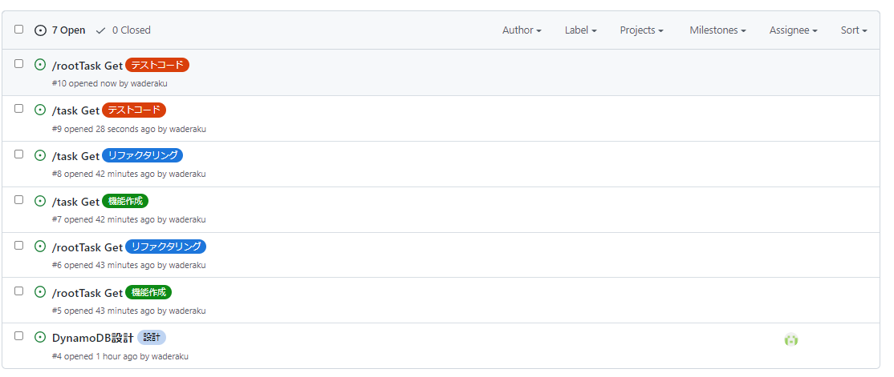

git運用について
共通¶
- 作業をする前に必ず対応するIssuesに自分をアサインする
- コミット時には現在実施しているIssuesの番号を記入(例:#86 XXXコンポーネント修正)
- ローカルブランチからリモートブランチのmasterには直にpushしない
- 別名でリモートブランチを切って、そこからpull requestを出す
- pull requestの名前にはissue番号を入れる(例:#86 XXXコンポーネント修正)
バックエンド¶
- 本開発ではテスト駆動開発（TDD）に従って実装を行う
- そのため、「テストコードの実装」→「機能開発」→「リファクタリング」のサイクルを回していく
- それぞれにラベルしたIssuesが存在するため、対応したIssuesにアサインする
- IssuesはAPI単位で発行する。Issues名は「APIURI(/taskなど) HTTPメソッド名(Getなど)」の規則に従う 